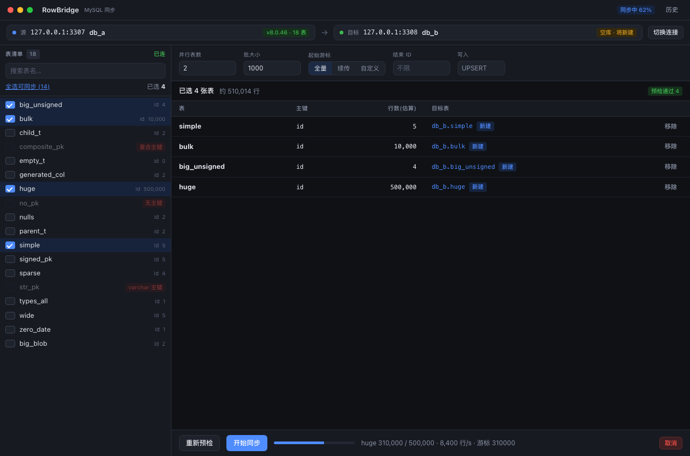
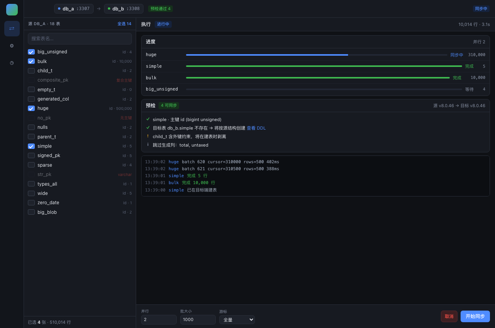
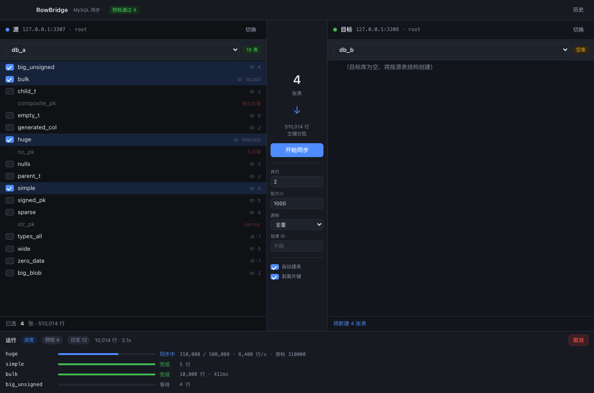
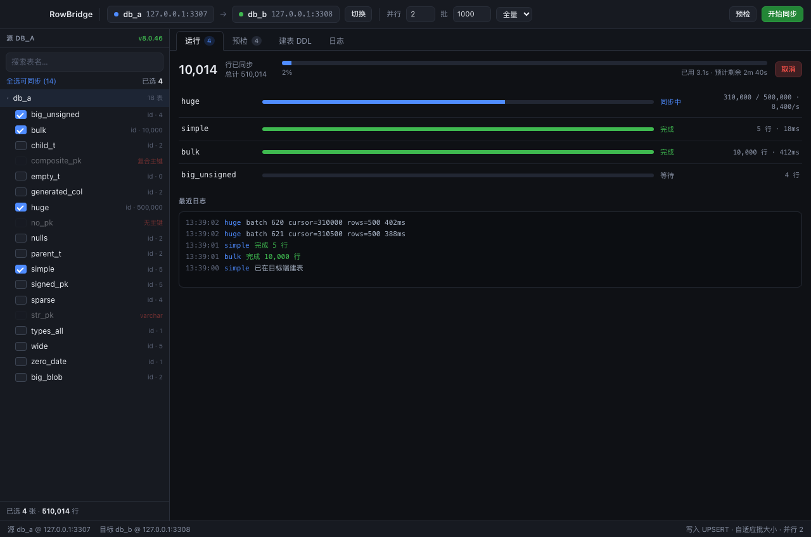

四种布局，点任意一张打开可交互原型（同尺寸 1280×848 渲染）。看完告诉我选哪个，或者哪几个元素想混搭。

连接压成一条状态栏，几乎所有高度都留给表清单。选项常驻顶部，已选表 + 底部运行条同屏可见。

左侧窄导航，中间源表树，右侧预检+进度+日志常驻不切页。缺点：左侧导航会被窗口红绿灯压住，需右移。

左「源」右「目标」并列，中间传输条。A→B 的搬运关系一眼看懂，目标端状态也一直可见。

工具栏放连接和常用参数，右侧运行/预检/DDL/日志分标签。和 Chat2DB、Navicat 的操作习惯接近。